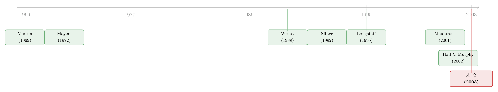

纸面上的百万富翁：一只「卖不掉」的股票，到底值多少钱？
本文读的是 Kahl, Liu & Longstaff (2003, Journal of Financial Economics)：当一个人把大半身家压在自家公司的股票上、却被规定多年不许卖出时，这只股票对他本人的价值会远低于市场价——在「占财富 50%、锁定 5 年」这个并不极端的设定下，它的主观价值只相当于市场价的 30% 到 80%。也就是说，单单「不能卖」这一条，就能吃掉两到七成的价值。这个数字，足以推翻华尔街「受限股票成本很小」的流行看法。
1 引言：一群「纸面上的百万富翁」
先讲一个在 2000 年前后反复上演的故事。一个人创办或加入了一家公司，公司上市了，他手里的股票按市价一算，账面上是几百万、甚至几千万美元的身家。可就在市场掉头向下、股价一泻千里的那几个月里，他眼睁睁看着财富蒸发，却动弹不得——因为锁定期 (lockup) 还没结束，或者法律不允许他卖。等到能卖的那天，纸面上的百万富翁，已经所剩无几。
《华尔街日报》在 2001 年春天密集报道过这类故事。有意思的是，业界对「受限股票 (restricted stock)」的主流看法却相当轻描淡写：2001 年 4 月 12 日的那篇报道甚至援引业内观点，认为受限股票对持有人的成本「很小」，是一种比期权更高效的薪酬形式。
这就是本文要正面回应的那个张力：实践者认为「不能卖」只是个小麻烦，而理论能不能给出一个严肃的数字？ Kahl、Liu 和 Longstaff 三位作者的答案是——这个成本大得惊人。
那么，一只你明明持有、却在好几年里都卖不掉的股票，对你本人究竟值多少钱？这篇论文从头到尾就在把这一个问题钻透。它的答案不是「打个九折」那么温柔，而是动辄两到七成的折损。
2 「卖不掉」为什么这么贵？——三股力量
要理解这个折扣从哪里来，先得想清楚：受限股票的痛点，并不在「股票本身有风险」。一个不受限的投资者，如果不喜欢某只股票的风险，随时可以卖掉、可以分散。痛点在于你被钉在了一个无法分散、无法再平衡的头寸上，而且这个状态要持续好几年。
于是有三股力量在同时挤压持有人的福利：
- 无法分散的集中风险。创业者的财富高度集中在一只股票上，承担了本可以被分散掉的特质风险，却得不到任何额外补偿。
- 对冲的需要。他虽然不能动那只受限股票，但手里还有一部分流动财富，可以在股票市场上建仓，来部分对冲受限头寸的风险。这一点恰恰是本文区别于早期「高管期权」文献的关键——在 Hall and Murphy (2000) 那类模型里，代理人是不被允许在别的市场上对冲自己头寸的。
- 消费的平滑。他知道限制总有一天会解除，于是要提前调整消费和投资，为「解禁日」那个状态切换做准备。
把这三件事放进一个连续时间的动态最优化问题里，就是本文模型的全部任务。
3 模型：把 Merton 框架「掰开一道缝」
本文的骨架是经典的 Merton (1969, 1971) 连续时间消费—组合选择框架，只是被「掰开了一道缝」：多了一类卖不掉的资产。
市场上有三种资产。无风险债券 \(B_t\)：
$$ dB = r B\, dt $$
代表股票市场（或一只股指基金）的风险资产 \(M_t\)，其超额收益为市场风险溢价 \(m\)、波动率为 \(\sigma\)：
$$ dM = (r + m) M\, dt + \sigma M\, dZ_1 $$
以及创业者持有的那只公司股票 \(S_t\)，超额预期收益为 \(l\)、波动率为 \(\nu\)：
$$ dS = (r + l) S\, dt + \nu S\, dZ_2 $$
其中 \(dZ_1\) 与 \(dZ_2\) 的相关系数为 \(\rho\)（\(-1 < \rho < 1\)），这允许公司股票与大盘高度相关。这里有一处看似不起眼、却极其关键的简化假设：作者让公司股票的风险溢价恰好满足资本资产定价模型 (Capital Asset Pricing Model, CAPM)，即
$$ l = \frac{m \rho \nu}{\sigma} $$
为什么要这么设？因为它有一个干净到近乎残忍的推论：一个不受限制的投资者，对这只公司股票的最优持仓权重恰好是零（除非它已经包含在股指里）。换句话说，模型把「公司股票本身有没有 alpha」这件事彻底剔除了——这只股票之所以对创业者还有特殊价值或特殊成本，纯粹来自「不能卖」，而不是来自它能多赚钱。这是一个让识别变干净的漂亮设计。
接着，是流动性约束本身。创业者在 0 时刻拿到 \(N\) 股公司股票，在 \(t < \tau\) 之前不能改变持股数量 \(N\)——不能直接卖，也不能用期权、股权互换 (equity swap) 等衍生品间接变现；过了 \(\tau\) 之后则完全自由。注意一个微妙之处：虽然股数 \(N\) 不变，但受限股票占总财富的比重
$$ X_t = \frac{N S_t}{W_t} $$
却是随机波动的——股价涨了 \(X\) 就上去，跌了就下来。这个 \(X_t\) 是整个模型的「状态变量」。
创业者的偏好是标准的 CRRA 形式（风险厌恶系数为 \(\gamma\)，时间偏好率为 \(k\)）：
$$ E\!\left[\int_0^T e^{-ks} U(C_s)\, ds + e^{-kT} U(W_T)\right], \qquad U(x) = \frac{x^{1-\gamma}}{1-\gamma} $$
他的流动财富是 \((1-X_t)W_t\)，要在无风险资产和股票市场之间分配；令 \(\phi_t\) 为投在股票市场上的权重，则无风险资产权重就是 \(1 - \phi_t - X_t\)。
3.1 一个不能忽略的边界：永远不许「借钱买非流动资产」
这里有一处值得停下来体会的细节。模型允许创业者无限做空债券和股票市场，但作者证明：如果他让流动财富变成负的，就有正的概率在 \(T\) 时刻陷入负的总财富——而 \(U(x)\) 在 \(x<0\) 时取 \(-\infty\)。直觉是，一旦流动头寸为负，它有非零概率一直为负；而那只受限股票又总有可能在解禁前跌向零。于是理性的创业者绝不会让流动财富为负，这等价于一条铁律：他从不拿非流动股票去抵押借钱，因而 \(0 < X_t \le 1\) 恒成立。
这条边界，正是后面「消费被压得极低」这个反直觉结论的根源。
3.2 财富的演化：本文最核心的一个方程
把上面所有东西合在一起，创业者的财富遵循（沿用 Merton 的写法）：
这个方程一眼就能看出问题的难处所在：财富的波动由两个相关的布朗运动驱动，其中 \(a3\) 那一项里的 \(X\) 是创业者控制不了的。他唯一能调的，是 \(\phi\) 和 \(C\)。
而真正关键的一步在于：当没有流动性约束时，\(\phi\)、\(X\)、\(C\) 三者都能自由选，问题可以逐期分解，最优解就是 Merton (1969) 那组简单的常数；可一旦 \(X\) 的初值被外生给定、又不能动，\(\phi\) 和 \(C\) 就开始扮演「双重角色」。它们一方面像往常一样直接影响财富的分布；另一方面，它们还会通过影响 \(X\) 随时间的演化，间接地再影响财富。举个例子：今天少消费一点，会压低未来的 \(X\)。于是最优的 \(\phi\) 和 \(C\)，开始以极其微妙的方式依赖于 \(X\)。
3.3 一阶条件与那条会「拐弯」的策略
把间接效用函数写成 \(J(W,X,t) = \dfrac{W^{1-\gamma}}{1-\gamma} F(X,t)\)，作者推出了最优消费 \(C^*\) 与最优市场权重 \(\phi^*\) 的一阶条件：
$$ C^* = W\left(e^{kt}\Big(F - \tfrac{X}{1-\gamma}F_X\Big)\right)^{-1/\gamma} $$
$$ \phi^* = \frac{-\tfrac{m}{\sigma^2}(1-\gamma)F + \big(\tfrac{\gamma\rho\nu}{\sigma} + \tfrac{m}{\sigma^2}\big)X F_X + \big(\tfrac{\rho\nu}{\sigma}\big)^2 X^2 F_{XX}}{-\gamma(1-\gamma)F + 2\gamma X F_X + X^2 F_{XX}} - \frac{\rho\nu}{\sigma}X $$
其中 \(F(X,t)\) 满足一个 Hamilton-Jacobi-Bellman 方程（边界条件 \(F_X(1,t)=\infty\)，对应 \(X=1\) 那道墙）。这个方程没有解析解，作者用有限差分和模拟去数值求解。
公式虽然复杂，但两个极限给了我们扎实的直觉：
- 当 \(X \to 0\)（受限股票微不足道）时，\(\phi^*\) 收敛到 Merton 的经典常数 \(\dfrac{m}{\gamma\sigma^2}\)——一切回到教科书。
- 当 \(X \to 1\)（几乎全部财富都被锁死）时，\(\phi^*\) 与 \(C^*\) 双双趋于零。直觉很冷峻：如果流动财富快要见底，创业者绝不敢再在股市上冒一分钱风险（否则可能跌进负的流动财富），他宁可勒紧裤腰带、近乎停止消费，也不去借钱。
（关于「不能立刻变现」如何彻底改写动态组合选择，可参见《把投资组合的「天书」解到只剩一个常微分方程》与《明明是「稳赚」的套利，他却故意只做一半》。）
4 主要结果：折扣大得惊人
现在到了揭晓答案的时候。作者用「福利损失」来度量成本：把创业者在受限情形下能达到的最大效用，和「如果股票完全可卖」时能达到的效用作比较，再换算成等价的市场价值折扣。
核心结果：一个创业者，若其受限股票占财富的 50%、锁定 5 年，那么这只股票对他本人的价值，只相当于市场价的 30% 到 80%（具体落在哪个数，取决于风险厌恶程度）。换个说法——他会甘愿以市场价的三到八成把这批股票脱手，因为「不能卖」这一条，已经替他吞掉了两到七成的价值。
而且这还不是上限。作者指出，当几乎全部财富都压在受限股票里、且创业者无法用反向的股市头寸去对冲时，成本会显著更高。这个量级，和 Hall and Murphy (2000, 2002)、Meulbroek (2001) 等研究「授予高管股票期权的成本」时报告的数字，大致在同一个数量级上。
然后，一个反转出现了。受限股票不仅压低了价值，还会戏剧性地改写流动财富该怎么投：
- 视公司与大盘的相关性而定，创业者会显著增持或减持股票市场头寸；这种调整在受限股票占财富中等比例时最强。
- 最耐人寻味的是：即便公司与大盘的相关性为零，创业者也可能比没有约束时更多地持有股票市场。为什么？因为多承担一点市场风险，能帮他平滑由「临时性流动约束」造成的消费波动。这与「对冲」的直觉正好相反——这里多冒的险，是为了消费的平稳，而非为了对冲。
- 最后，尽管理论上他能拿非流动头寸去借钱，他却选择以远低于无约束情形的速率去消费。
这三点合在一起，刻画出一个被「卖不掉」三个字逼到墙角的人：他过着比账面财富所暗示的更拮据的生活，并且用一种外人看不懂的方式在股市上腾挪。
5 它意味着什么：从公司治理到家族企业
把这个结论往外推，含义相当深远。
对公司治理。 如果受限股票对那些大量持有自家股票、又面临严格交易限制的管理者来说，价值大打折扣，那么它作为一种治理工具就更昂贵、在降低代理成本上也更低效。更进一步，缺乏分散化的高成本，给了管理者强烈的动机去做分散化并购——哪怕这并不符合股东利益（见 Amihud and Lev, 1981；Morck et al., 1990）。这也为「把公司做上市」提供了一个重要动因。
对私募折价之谜。 这个框架还为私募股权配售常见的大幅估值折扣（Wruck, 1989；Silber, 1992）提供了一种可能的解释。
对家族企业。 La Porta et al. (1999) 发现，在大多数国家，即使是最大的上市公司，家族所有也是主导的所有权结构。本文模型暗示，家族所有者因缺乏分散化而承担的成本，可能相当可观。
（顺带一提，「不能卖」的代价这条线，与《最优的「锁」：一笔退休金，应该有多难取出来？》、《把「卖不掉」当成一道门槛：私募股权为什么主动给自己上锁》以及《价格里那道折扣，量的是「找不到买家」的时间》恰好构成一组互文。）
6 这些限制究竟从哪儿来？
值得一提的是，本文用了整整一节去梳理「限制」的来源——这让它的设定显得格外有现实质感，而不是凭空设一个 \(\tau\)。
合同性限制。 最典型的是 IPO 的锁定期：SEC 并不要求，但绝大多数 IPO 的承销合同里都有，通常禁止内部人在 180 天内卖股；锁定期也可以更长——Ibbotson and Ritter (1995) 记录过 Morgan Stanley 同意过两年锁定期的案例。薪酬合同里的限制性股票计划也类似：Kole (1997) 发现 371 家财富 500 强公司里有 79 家有此类计划，最短持有期从研发中等公司的 31 个月到研发密集公司的 74 个月不等，超过四分之一的计划要求退休前不得出售。
法律性限制。 最重要的是 SEC 的 Rule 144：它限制公司内部人或关联方在不登记的情况下能卖多少股。关联方在取得股票后一年内根本不能卖；一年后，每三个月也只能卖「总股本的 1%」与「前四周平均周成交量」二者中的较大值。对许多交投清淡的小公司，控制人想清掉一大笔股权，可能要好几年。Bettis et al. (2000) 更发现，样本里超过 92% 的公司对内部人交易设有限制（如禁售窗口）。
这一节的价值在于：它说明模型里那个抽象的 \(\tau\)，在现实中往往不是 180 天，而是叠加了合同与法律之后的好几年——这正是折扣能大到两到七成的现实基础。
7 文献脉络
把这篇论文放回它生长的那条藤上，脉络就清晰了。
最早的源头有两支。一支是 Merton (1969, 1971) 奠定的连续时间消费—组合选择框架，本文的全部数学骨架都来自这里。另一支是 Mayers (1972, 1973) 关于「不可交易资产 (nonmarketable assets)」如何改写资本市场均衡的思考——它第一次严肃地把「有些财富你根本卖不掉」写进了定价理论。
接着，一个自然的问题是：「不能卖」到底值多少钱？ Longstaff (1995) 在「可流通性能在多大程度上影响证券价值」一文里给出了一个上界式的回答；与此同时，私募折价的经验证据（Wruck, 1989；Silber, 1992）也在积累——人们看到了折扣，却缺一个能内生地解释折扣大小的动态模型。
然后，高管薪酬文献从另一个方向逼近了同一个问题。Hall and Murphy (2000, 2002) 和 Meulbroek (2001) 在算「授予高管期权的真实成本」时，本质上也在问「一个不能分散、不能自由处置的头寸，对持有人值多少」。但他们的设定里，代理人通常不被允许在别的市场上对冲。

但真正关键的一步在于：本文把「允许在其他市场对冲」和「允许中间消费」这两件事同时塞进了一个连续时间模型，并对一般的 \(X\) 值（而不仅仅是 \(X\) 很小时）求解。这正是它区别于同期 Henderson and Hobson (2001) 那个只对小 \(X\) 给出级数近似、且没有中间消费的相似模型之处。于是，2003 年的这篇论文，站在了 Merton 的方法、Mayers 的问题、Longstaff 的流动性定价与高管期权文献的交汇点上。
8 评论与延伸（Q&A + 研究方向）
(a) 几个可能的疑问
Q：这个「30% 到 80%」是市场上观察到的折价，还是模型算出来的主观价值？
是模型算出来的主观（确定性等价）价值，不是市场成交折价。作者通过比较「受限」与「完全可卖」两种情形下创业者能达到的最大效用，再换算成等价的价值折损。它衡量的是「这只股票对持有人本人值多少」，而非市价。这一点很重要：市场上别人可以自由交易这只股票，所以市价不打折，打折的只是它对那个被锁住的人的价值。
Q：为什么要假设公司股票满足 CAPM（\(l = m\rho\nu/\sigma\)）？这会不会把结论做没了？
恰恰相反，这个假设是为了让结论更干净。它保证了「不受限投资者对这只股票的最优权重为零」，从而把折扣的来源纯化为「不能卖」本身，而剔除了「这只股票是否有 alpha」的干扰。如果放松它、让公司股票有正的 alpha，折扣会变小（因为持有它本身有了补偿），但「流动性约束有成本」这个定性结论不会变。
Q：和高管股票期权那一支文献（Hall-Murphy、Meulbroek）相比，本文新在哪？
两点。一是研究对象从期权换成了受限股票；二，也是更本质的，是允许创业者在其他市场（股市、债市）上对冲自己被锁住的头寸。早期高管期权模型大多禁止对冲，这会高估成本。本文允许对冲，所以它报告的折扣是「在持有人已经尽力自救之后」仍然剩下的成本——这反而让「成本依然很大」这个结论更有说服力。
Q：为什么消费会被压到那么低，甚至在能借钱的情况下也不借？
因为模型里有一条铁律：让流动财富变负，会带来正概率的「负总财富」，而效用在负财富处是 \(-\infty\)。理性创业者宁可极度节俭、近乎停止消费，也绝不拿卖不掉的股票去抵押借钱。当 \(X \to 1\) 时，\(C^*\) 和 \(\phi^*\) 一起趋于零，正是这条边界在起作用。
Q：「相关性为零时反而更多持有大盘」这个结论，不是和对冲直觉矛盾吗？
不矛盾，因为这里多持大盘不是为了对冲风险，而是为了平滑消费。流动性约束是临时的，解禁前创业者的消费会被受限头寸的波动搅动；适度多承担一点市场风险，能让他在解禁前的消费路径更平稳。对冲（降低风险）和消费平滑（管理跨期消费）是两个不同的动机，后者在这里占了上风。
Q：模型是部分均衡的，这是不是一个硬伤？
是一个需要明说的局限。本文把市场参数 \(m, \sigma, \nu, \rho\) 都当成外生常数，创业者是价格接受者。它回答的是「给定市场，这只锁死的股票对个人值多少」，而不是「大量受限股票如何反过来影响均衡价格」。要把私募折价、家族企业估值这些含义做成一般均衡，还需要别的工作。
(b) 几个可能的研究问题与提案
1. 把这套「流动性折扣」逻辑搬到公司债与信用市场。 【经济故事】公司债的二级市场流动性极差，许多机构（尤其是「持有到期」型的保险公司）实际上长期被锁在头寸里，处境与本文的创业者高度相似。一只债券对一个「卖不动」的持有人，价值是否系统性地低于其市价？这能为信用利差里的「流动性那一块」提供一个基于持有人最优化的微观基础。 【可行性】中。需要 TRACE 的成交数据 + NAIC/保险公司持仓数据来刻画「谁被锁住」，识别上可借用监管对持仓与处置的约束作为外生变化。理论端把本文的单一受限资产换成债券现金流即可，doable，但把「主观折扣」和「市价利差」对齐需要细致设计。
2. 外资持有人的「隐性锁定」与估值。 【经济故事】外资在很多新兴市场受制于可投资度上限、资本管制、汇兑摩擦，等于面临一种「软性流动性约束」。本文框架预言：约束越紧的外资，其持有的股票对他们的主观价值越低，进而影响他们愿意付的价格和持仓行为。 【可行性】中。可投资度 (investability) 的开放/收紧事件提供了准自然实验，数据上 MSCI 可投资度指数 + 外资持仓可得。挑战在于把「主观折扣」与可观测的价格、流动行为映射起来。
3. 解禁日临近时的消费与投资轨迹，能否在微观数据里看到？ 【经济故事】本文预言，随着解禁日 \(\tau\) 临近、以及 \(X\) 的高低不同，受限持有人的消费和股市头寸会沿着可预测的轨迹移动（如 \(X\) 高时近乎停止消费、压缩风险敞口）。 【可行性】低到中。理想数据是把个人的受限持股、券商账户交易、消费（信用卡/账户流水）连起来——隐私与可得性是最大障碍。若能拿到某券商「Rule 144 借贷」客户的样本，则可行性上升。
4. 锁定期长度的最优设计：治理收益 vs. 流动性成本。 【经济故事】本文量化了锁定的「成本侧」，而锁定的「收益侧」（留住人才、对齐激励）有另一支文献。把两者放进同一个最优合同问题，能回答「最优锁定期该多长」，并解释为何高研发公司锁得更久（Kole, 1997 的事实）。 【可行性】中。理论上 doable；经验检验需要锁定期长度的横截面变异 + 公司特征，数据可从招股书与薪酬合同手工收集。
9 我的判断
贡献。 这篇论文最漂亮的地方，是用一个克制到极致的设定（CAPM 假设让公司股票「没有 alpha」），把一个含混的实务争论变成了一个可计算的数字，并且这个数字大得足以颠覆「受限股票成本很小」的流行看法。它同时允许对冲与中间消费，使得「成本依然巨大」这一结论比早期禁止对冲的高管期权模型更站得住脚。两个反直觉结论——「相关性为零也可能更多持大盘」「能借钱却几乎不消费」——都来自模型内部一致的逻辑，而非凑出来的，这是好理论的标志。
对识别（这里更像是对结论稳健性）的担忧。 第一，结论是部分均衡的，参数全部外生，无法说话于「大量受限股票如何反推均衡价格」，因此对私募折价、家族企业估值的含义只是启发性的。第二，CAPM 假设虽让识别变干净，但也意味着报告的折扣是一个「无 alpha」基准；现实中创业者往往相信自家股票有超额收益，这会内生地削弱折扣，模型对此着墨不多。第三，效用在负财富处取 \(-\infty\) 这条假设驱动了「近乎零消费」的极端行为，换一个对破产没那么严苛的设定，消费路径可能温和得多。
后续想看到什么。 我最想看到的是把这套主观折扣对照到可观测价格：无论是私募配售的实际折价、Rule 144 借贷的利率，还是公司债里被锁住持有人的处境，都能成为检验「30%–80%」这个量级的试金石。把它从一个优雅的理论数字，变成一个能被数据反复敲打的经验对象——那才是这条线真正长大的时候。
参考文献
- Amihud, Y., Lev, B. (1981). Risk reduction as a managerial motive for conglomerate mergers. Bell Journal of Economics 12, 605–617.
- Hall, B., Murphy, K. (2000). Optimal exercise prices for risk averse executives. American Economic Review May, 209–214.
- Hall, B., Murphy, K. (2002). Stock options for undiversified executives. Journal of Accounting and Economics 33, 3–42.
- Henderson, V., Hobson, D. (2001). Real options with constant relative risk aversion. Journal of Economic Dynamics and Control 27, 329–355.
- Ibbotson, R., Ritter, J. (1995). Initial public offerings. In: Handbooks in Operations Research and Management Science. Elsevier, Amsterdam, pp. 993–1016.
- Kahl, M., Liu, J., Longstaff, F. (2003). Paper millionaires: how valuable is stock to a stockholder who is restricted from selling it? Journal of Financial Economics 67(3), 385–410.
- Kole, S. (1997). The complexity of compensation contracts. Journal of Financial Economics 43, 79–104.
- La Porta, R., Lopez-de-Silanes, F., Shleifer, A. (1999). Corporate ownership around the world. Journal of Finance 54, 471–517.
- Longstaff, F. (1995). How much can marketability affect security values? Journal of Finance 50, 1767–1774.
- Mayers, D. (1972). Nonmarketable assets and capital market equilibrium under uncertainty. In: Jensen, M. (Ed.), Studies in the Theory of Capital Markets. Praeger, New York, pp. 223–248.
- Merton, R. (1969). Lifetime portfolio selection under uncertainty: the continuous time model. Review of Economics and Statistics 51, 247–257.
- Merton, R. (1971). Optimum consumption and portfolio rules in a continuous time model. Journal of Economic Theory 3, 373–413.
- Meulbroek, L. (2001). The efficiency of equity-linked compensation: understanding the full cost of awarding stock options. Financial Management Summer, 5–30.
- Silber, W. (1992). Discounts on restricted stock: the impact of illiquidity on stock prices. Financial Analysts Journal July/August, 60–64.
- Wruck, K. (1989). Equity ownership concentration and firm value: evidence from private equity financings. Journal of Financial Economics 23, 3–28.